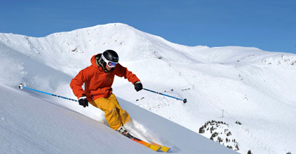
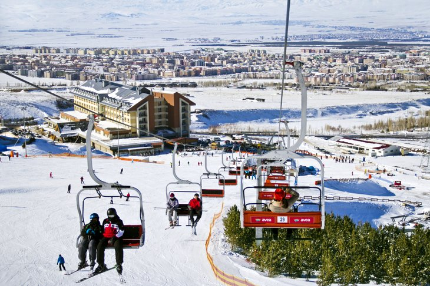
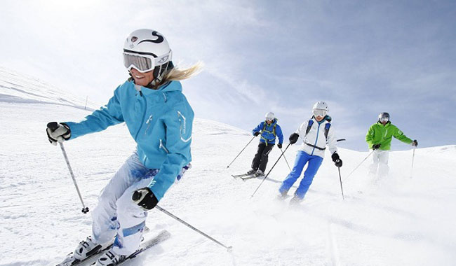
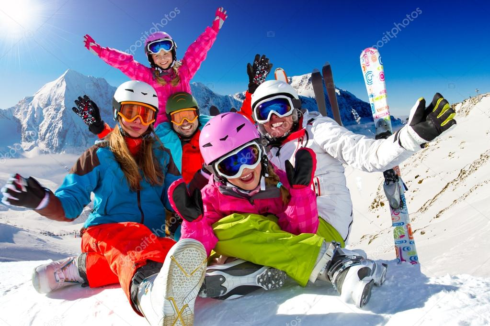

Kayak
Kayak merkezleri açısından zengin bir ülke sayılırız. Uludağ, Palandöken, Kartepe, Ilgaz, Erciyes, Elmadağ… her kış binlerce kayak severi tesislerinde ağırlıyor. Hem bacakları, hem kalçaları hem de karın kaslarını çalıştıran kayak denge, hız, kondisyon ile birlikte komple bir spordur. Mutlak bir disiplin gerektiren kayağa başlamadan önce mutlaka bir eğitmenden duruş, dönüş, kayma, düşme gibi tüm ayrıntılar öğretilir ve uygulamalarla birlikte deneyime dönüşür.
Kayak Nedir?
Kar ve buz üzerinde kayarak yol almak için ayaklara takılan uzun ve yassı satıhlı, ön uçları hafif yukarı ve arkaya kıvrık bir alet olan "Kayak" ile yapılan spor dalının adıdır.
Kayak Nasıl Yapılır?
Kayak yaparken seviyenize göre bir pist seçmeli ve ilk zamanlarda ekiple hareket edin. Kayarken nizami ve dairesel dönüşler yapmaya dikkat edin ve hareketlerinizi dikkatli gerçekleştirin. Ani hareketler dengenizi kaybettirebilir. Dizlerinizi her zaman kıvrık durumda tutun ve düşerken de bu pozisyonu koruyun. Düştüğünüz zaman tekrar ayağa kalkmak için çaba sarfetmeyin. Tamamen durana kadar yerde bekleyin. Yolunuzdaki kaya ve tümsek alanlara karşı dikkatli olun.
Bilgisayarınıza yükleyeceğiniz kayak simülatörleri sayesinde kendinizi geliştirebilirsiniz. Wii Konsol ve We Fit Plus size ekrandaki senaryoya göre yaptığınız hareketleri değerlendirerek size gerçeğe yakın bir kayak deneyimi sunar.
Unutmayın, her kayakçı etraftaki diğer insanları tehlikeye düşürmeyecek ve onlara zarar vermeyecek biçimde hareket etmelidir. Herkes dışarıdan görülebilir ve takip edilebilir şekilde kaymalı ve hızını arazi durumu, kar, yoğunluk gibi etkenlere göre kendi tecrübeleriyle ayarlamalıdır. Arkadan gelen kayakçı önde bulunanları risk altına almayacak şekilde iz seçimi yapmalıdır. Sağdan, soldan ya da yukarıdan istediğiniz şekilde önünüzdeki kayakçıyı geçebilirsiniz ancak geçiş yaparken kayakçıyla aranızda yeterli mesafe bıraktığınızdan emin olun. Durmanız gerekmedikçe pist üzerinde durmayın. Düştüğünüz takdirde de bir an önce pisti terketmeye çalışmalısınız.
 |
 |  |  |